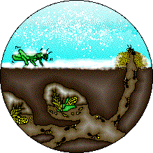

Contents
In a field one summer's day a Grasshopper was hopping about, chirping and singing to its heart's content. An Ant passed by, bearing along with great toil an ear of corn he was taking to the nest. "Why not come and chat with me," said the Grasshopper, "instead of toiling and moiling in that way?" "I am helping to lay up food for the winter," said the Ant, "and recommend you to do the same." "Why bother about winter?" said the Grasshopper; we have got plenty of food at present." But the Ant went on its way and continued its toil. When the winter came the Grasshopper found itself dying of hunger, while it saw the ants distributing, every day, corn and grain from the stores they had collected in the summer. Then the Grasshopper knew... It is best to prepare for the days of necessity.
Once upon a time, all the mice met, together in council, to discuss the best means of securing themselves against the attacks of the cat. After several suggestions had been debated, a Mouse of some standing and experience got up and said, "I think I have hit upon a plan which will ensure our safety in the future, provided you approve and carry it out. It is that we should fasten a bell around the neck of our enemy the cat, which will, by its tinkling, warn us of her approach." This proposal was warmly applauded, and it had been decided to adopt it, when an old Mouse got upon his feet and said, "I agree with you all that the plan before us is an admirable one: but may I ask who is going to bell the cat?" It is easy to propose impossible remedies.
A father had a family of sons who were perpetually quarreling among themselves. When he failed to heal their disputes by his exhortations, he determined to give them a practical illustration of the evils of disunion; and for this purpose he one day told them to bring him a bundle of sticks. When they had done so, he placed the bundle into the hands of each of them in succession, and ordered them to break it in pieces. They tried with all their strength, and were not able to do it. He next opened the bundle, took the sticks separately, one by one, and again put them into his sons' hands, upon which they broke them easily. He then addressed them in these words: "My sons, if you are of one mind, and unite to assist each other, you will be as this bundle, uninjured by all the attempts of your enemies; but if you are divided among yourselves, you will be broken as easily as these sticks." Union gives strength.
By an unlucky chance a Fox fell into a deep well from which he could not get out. A Goat passed shortly afterwards, and asked the Fox what he was doing down there. "Oh, have you not heard?" said the Fox; "there is going to be a great drought, so I jumped down here in order to be sure to have water by me. Why don't you come down too?" The Goat thought well of this advice, and jumped down into the well. But the Fox immediately jumped on her back, and by putting his foot on her long horns managed to jump up to the edge of the well. "Good-bye, friend," said the Fox. Remember next time... Never trust the advice of a man in difficulties.